고서연 Ko Seo-yeon
미디어 현장에서 콘텐츠를 만들고 운영하며 실무에 대한 이해를 넓혔습니다.
현장에서 발견한 문제를 데이터와 AI 기술로 해결하는 기획자가 되고자 합니다.
- EDUCATION
- 건국대학교 신문방송학과 학점 4.2 / 4.5
- CERTIFICATE
- 데이터분석준전문가 (ADsP)한국데이터산업진흥원 · 2026.08
DEVELOPMENT
AI & AUTOMATION
MARKETING · DESIGN
COLLABORATION
01 데이터 분석·시장조사
여러 플랫폼의 데이터를 분석해 콘텐츠 전략을 제안합니다
MEDIA STRATEGY OS
네이버·RACOI·유튜브 데이터를 통합해 17개 방송 프로그램의 화제성 변화를 분석하고, AI로 프로그램별 콘텐츠 전략을 제안하는 서비스입니다.
- 3개 플랫폼 데이터 수집·통합과 시각화 대시보드 구현
- 주간 화제성 변화 비교, 유튜브 영상 유형별 운영 현황 분석
- OpenAI API로 프로그램별 전략 생성, 결과 90건 직접 검증
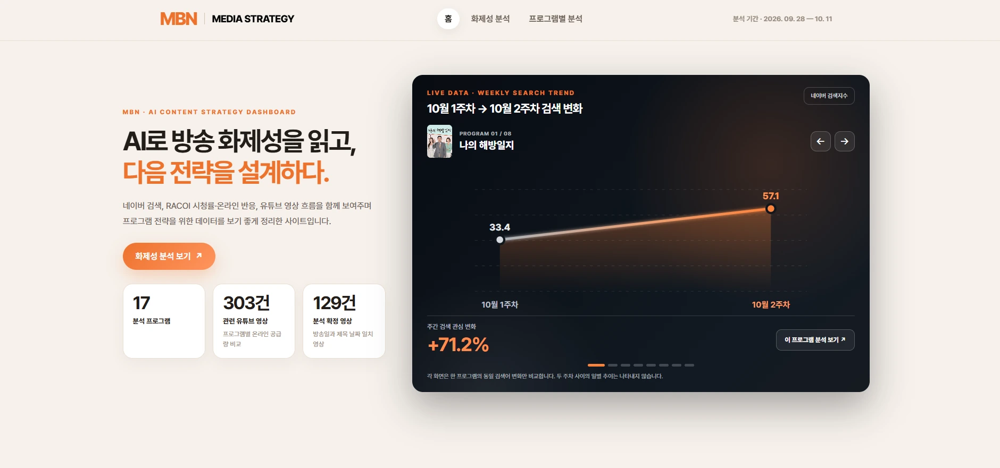
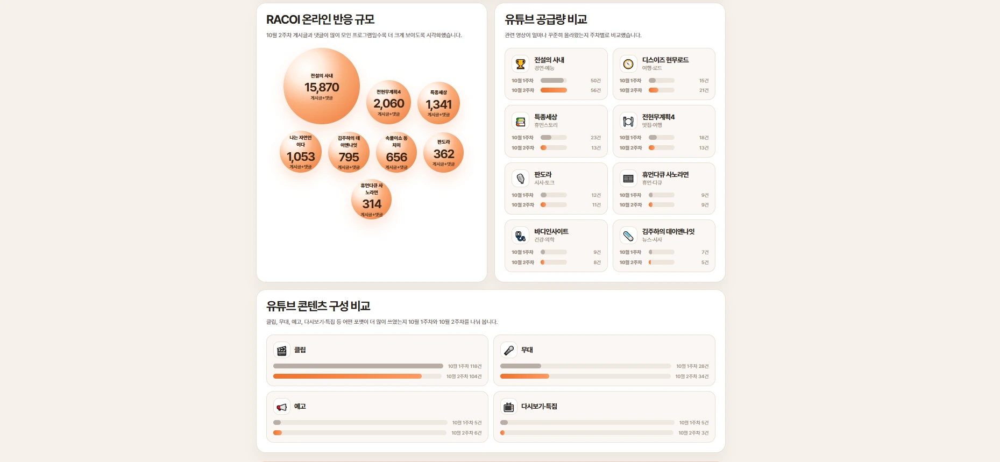
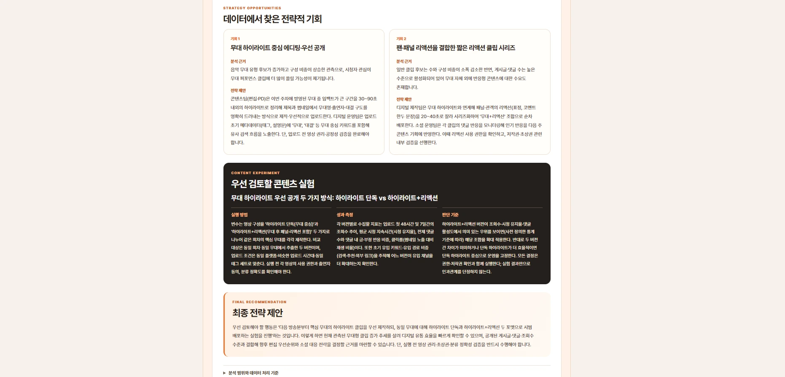
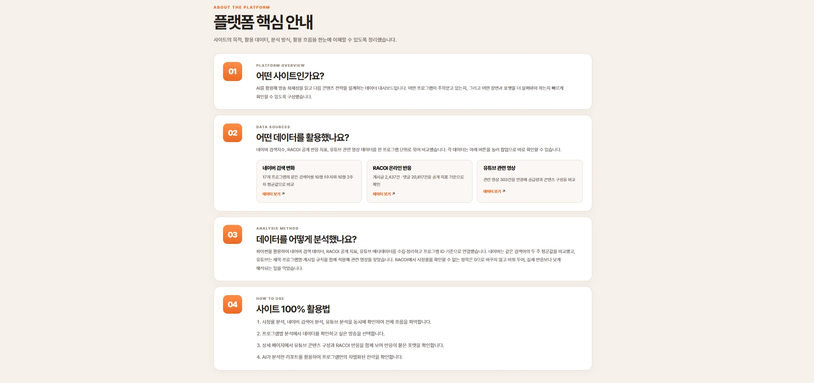
02 신사업·서비스 기획
현업의 문제를 분석하고, AI를 활용해 새로운 서비스를 설계합니다
동아일보 AI 기사 작성 프로그램
취재부터 작성·교정·배포까지 기자 업무를 하나의 프로그램 안에서 진행할 수 있도록 한 AI 뉴스 제작 서비스입니다.
- 현직 기자 설문·테스트로 실제 업무 흐름을 반영한 작성·저장·송고 화면 설계
- 기사 분석으로 AI 제목·부제 생성 기준 개선
- 동아 CMS를 참고한 사진 편집, 무료 사진 API 연동과 출처 자동 표기
- 작성 중 기사와 발행본을 구분한 저장·수정·재발행 구조
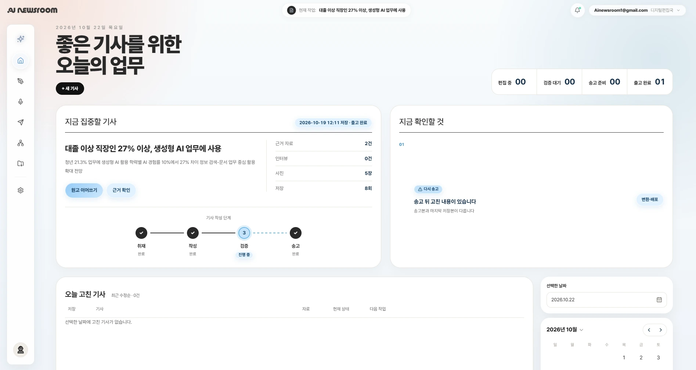
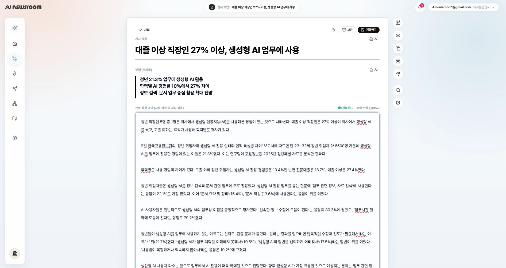
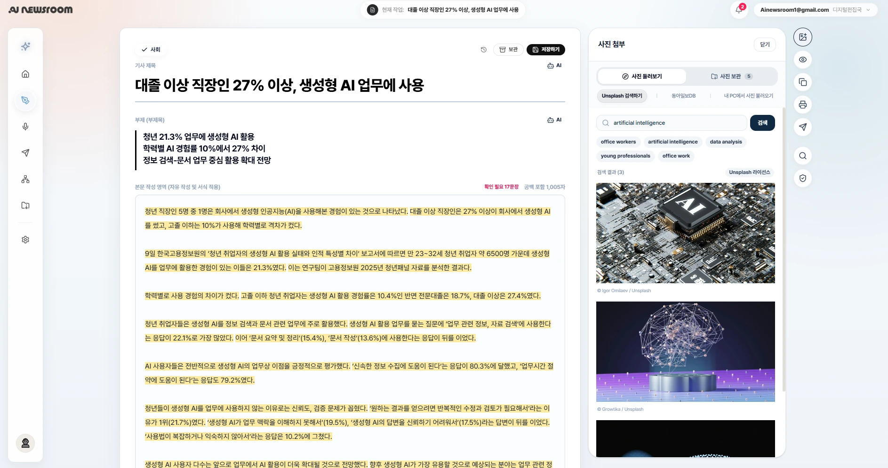
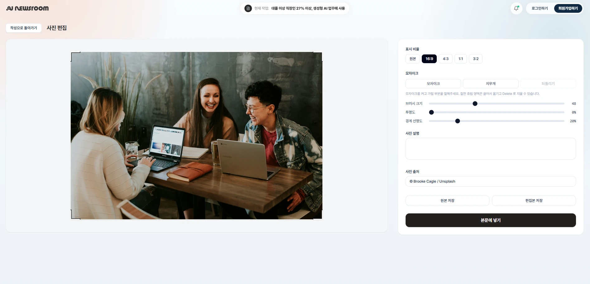
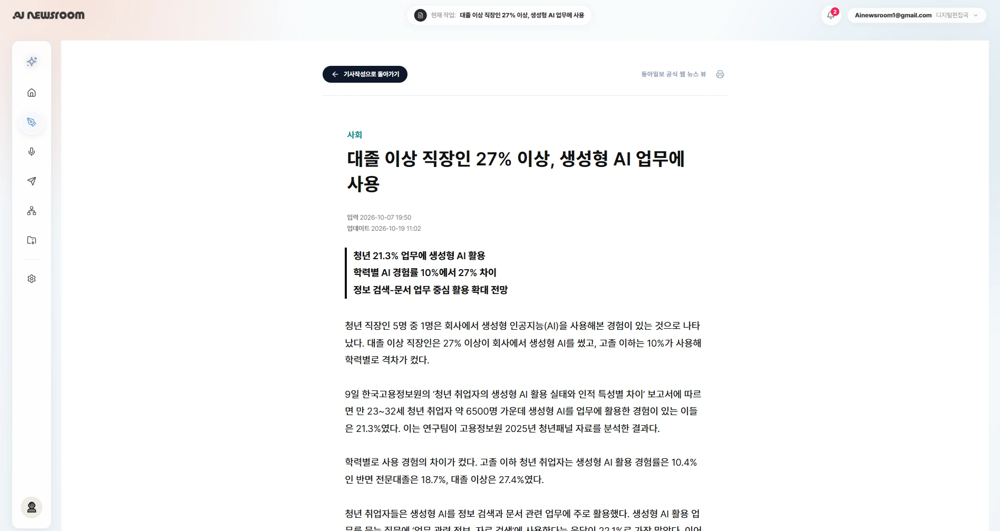
동네픽
서울 25개 자치구의 7개 분야 공공데이터를 통합해, 예산과 생활 성향에 맞는 동네 TOP 3를 추천하는 웹서비스입니다.
- 출처·단위가 다른 7개 분야 데이터(민원·주거·인구·상권·의료·교육·주차)를 자치구 단위로 통합
- 인구 보정·중앙값·정규화로 지역 간 공정한 비교 기준 설계
- 예산·생활 성향 가중치 기반 추천 알고리즘과 추천 근거 시각화
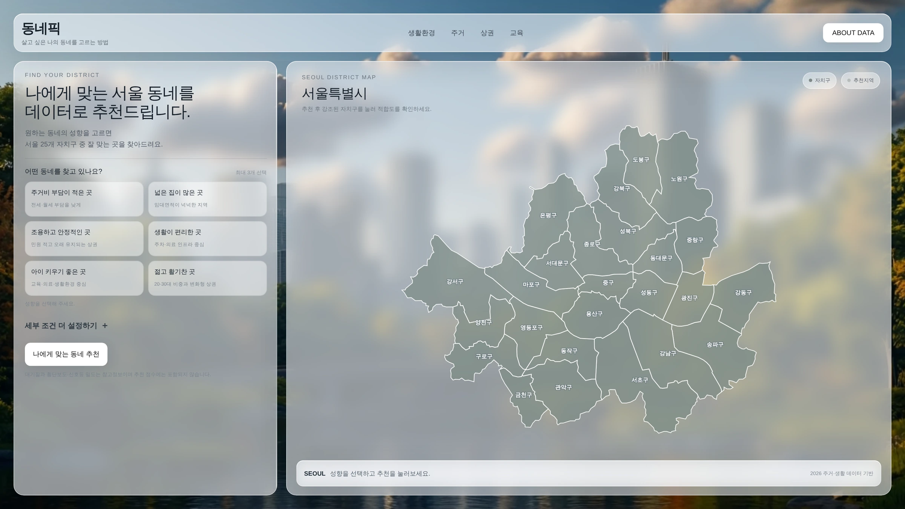
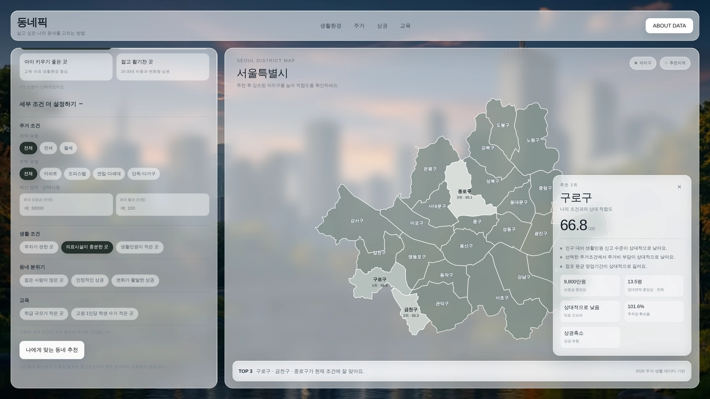
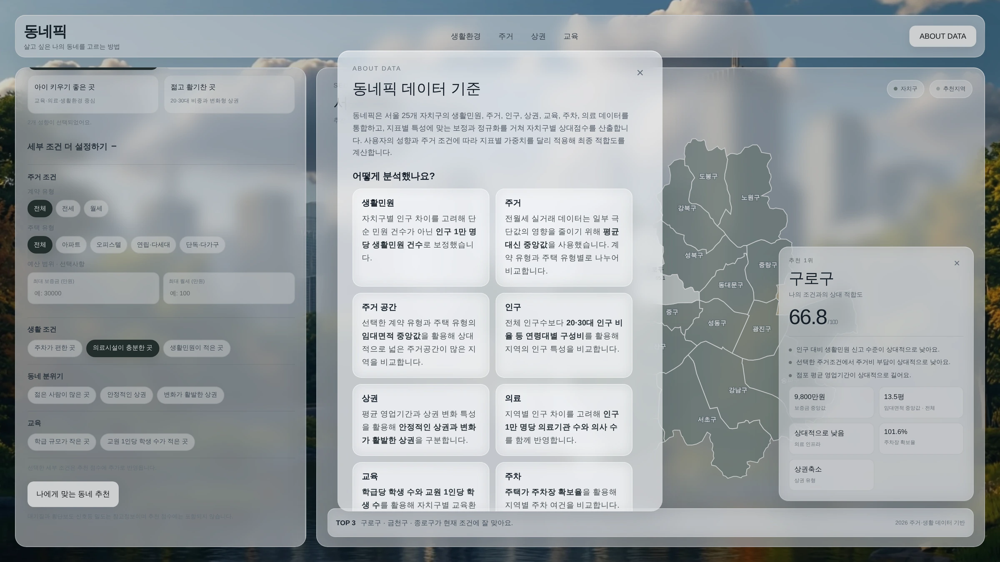
동네픽 프로젝트 자료
03 사업 제안·보고서 제작
사업을 기획해 지원금을 확보하고, 실행 결과까지 관리합니다
건국 타임즈
학교 주변의 잘 알려지지 않은 역사 유물을 알리는 안내판과 홍보 영상을,
기획안 작성부터 결과보고까지 직접 주도했습니다.
탐방 이벤트 활용
- 지역 유물 조사와 기획안 작성으로 제작 지원금 50만 원 확보
- 팀 구성·예산 수립 후 안내판·홍보 영상 제작
- 수업 자료·역사 탐방 이벤트로 활용을 넓히고 결과보고서 작성
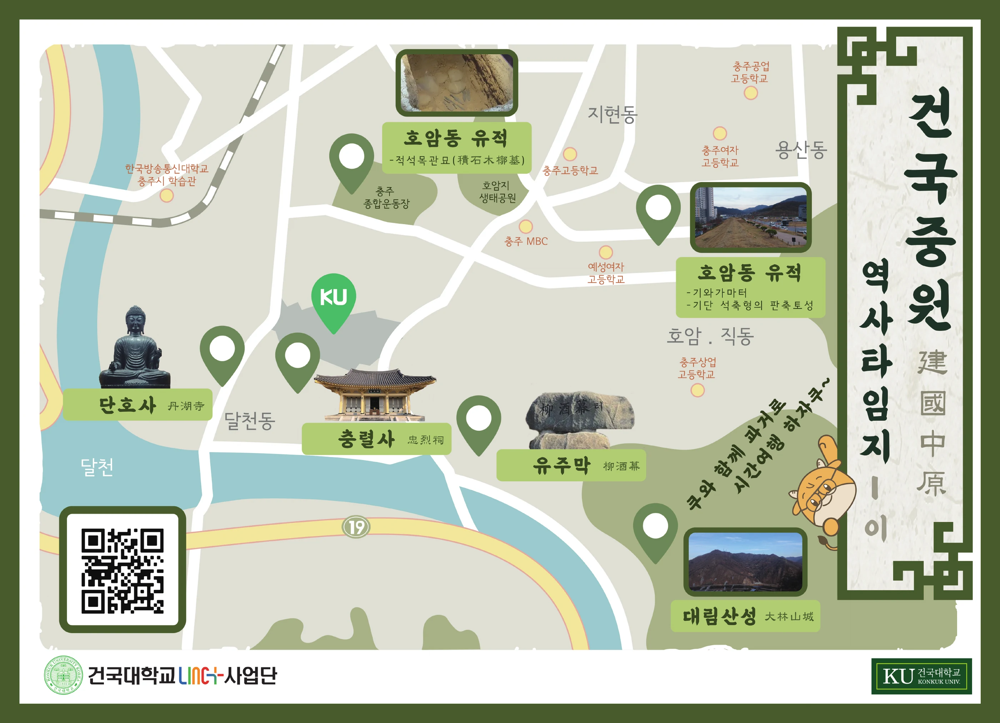
 ▶
▶04 홍보·광고 (IMC)
타깃에 맞는 광고를 기획·제작하고, 공모전 수상으로 성과를 입증했습니다
광고 영상 기획·카피라이팅
 ▶
▶휴먼셀바이오 15초 TV 광고
40·50세대 인터뷰를 바탕으로 면역세포 보관 기술을 은퇴 이후의 삶과 연결했습니다. MTN 머니투데이방송에서 50회 방영됐습니다.
 ▶
▶희망브리지 기후 위기 광고
일상 장면을 기후 위기 상황과 연결해 문제의 심각성을 전달했고, 아이디어와 카피 전달력에서 호평을 받았습니다.
 ▶
▶LINC+ 산학협력단 홍보 영상
취업·안전·창업·지역사회 4개 활동을 사칙연산에 빗대, 사업단의 역할을 쉽게 알렸습니다.
 ▶
▶다큐프라임 〈화학〉 트레일러
지원사업 심사용 트레일러의 대본을 작성해 국제 공동제작 지원사업 선정에 기여했습니다.
05 콘텐츠 기획·제작·유통
시청 데이터를 분석해 콘텐츠를 개선하고, 조회수 성장을 이끌었습니다
시사저널TV
6개월간 영상 112편을 기획·촬영·편집·송출해 누적 조회수 798만 회를 기록했습니다.
- 쇼츠 평균 조회수 3.8배 증가 — 1월 6.1만 → 5월 22.9만 회
- '몰아보기' 클립 포맷 기획 — 일반 클립보다 조회수 1.9배
- 라이브 조회수 3.1배 증가 — 첫 회 2만 → 최고 6.2만 회
- 정치·시사 현안 라이브 촬영·송출 운영 (11회)
- 핵심 장면을 고른 클립 제작과 몰아보기 포맷 기획
- 쇼츠 기획·편집·제목 구성, Photoshop·생성형 AI 썸네일 제작